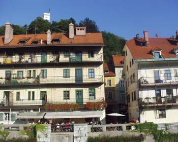
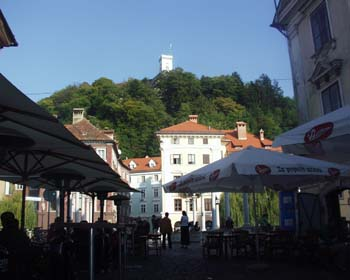

7 stvari o Ljubljani

Sedam stvari o Ljubljani, slično kao 'Sedan razloga zašto volim Budimpeštu' od pre nekoliko mesci.
Slovenia has a tremendous amount of world class athletes, record breaking swimmers and slim people – even Donald Trump captured a slender Slovene girl to be at his side. For the most part, in Europe and the Western world, we know that what we eat, how we exercise and how we treat ourselves comes down to habits and personal choice. Living in Ljubljana, one is certainly given the opportunity to walk or ride a bike as a means of daily transportation, let for outdoor exercise, and this year bicycles can even be rented for free at several locations.
Ovo citirano je potpuno tačno, i čini samo deo čari Ljubljane.
Dakle:
1. Biciklizam
Biciklističke staze su po celom gradu. Mnogo ljudi se prevozi isključivo njima, jer su staze, ravan teren, mali grad idealna kombinacija za ovu vrstu aktivnosti.
2. Termalne vode
Slovenija je prepuna termalnih voda. Neke od banja, na primer Čatež, postale su i u Srbiji prilično poznate, pa neke agencije organizuju petodnevne spa aranžmane za one željne oporavka od stresa, telesno i duhovno opuštanje. Jedan takav spa centar postoji i u Ljubljani, zove se Atlantis, preporučujem ga najtoplije. Dva sata svačega za deset evra, vredi svaku paru, a to je samo osnovni paket.
3. Ljudi
 Ovo, kao i svaku priču o ljudima u grupama (gradovi, države) treba svakako primiti sa rezervom, jer je to samo moj utisak na ograničenom uzorku. A utisak je: Slovenci spajaju super osobine i zapadne i istočne Evrope (Nazovimo to ovako: Topliji od prvih, racionalniji od drugih).. Zatim, na opušten život u bivšoj Jugoslaviji, neuporedivo bolji nego u ostatku istočne Evrope, nadovezale su se godine ekonomskog napretka, tranzicije u svim relevantnim sferama, ali uz izbegavanje nekih od grešaka iz drugih zemalja. Slovenci su, na primer, ušli u privatizaciju opreznije od zemalja koje su i same bile uspešne, na primer Češka ili Mađarska, i nisu prodavali strateški bitne firme tek bilo kome.
4. Kultura
Za jedan mali grad, kao što je Ljubljana, koja ima oko trista hiljada stanovnika, kulturni život je bogat i raznovrstan. Ima svega: od tradicionalne kulture, do koncerata, zanimljivih ciklusa filmova u kinoteci, do alternativne kulture koja u Ljubljani ima dugu i negovanu tradiciju
5. Pozicija
Dva sata do Jadranskog mora, sat vremena do Alpa. Blizu Hrvatske, Italije, Austrije, Madjarske.
6. Saobraćaj
Primer autobuske stanice u Ljubljani. Mala, neugledna zgrada, kažu mi da je isto tako izgledala i šezdesetih. Unutra, sve čisto i mirno i funkcionalno, novi kompjuteri u Internet cafeu, stanična usluga se ne naplaćuje.
7. Gradski život
Prvo, suprotno nekim predubeđenjima ovde, život u Ljubljani nije dosadan. U centru grada, pored reke, postoje na destine kafea i barova koji rade do kasno u noć. Pešačka zona se, od reke Ljubljanice, pruža široko na obe strane. Sa jedne završava na brdu i tvrđavi, sa druge u parku Tivoli koji se dalje nastavlja na šumu i brdo. Dakle, iako je mnogo manja od Beograda, Ljubljana u stvari ima mnogo veći centar grada u kome se možete šetati, jesti, piti, zabavljati, kupovati suvenire i slično.
Ovo je samo deo mojih izuzetno pozitivnih i na brzinu stečenih utisaka o Ljubljani, te ako iko od novijih članica EU zaslužuje da to bude, to je sigurno Slovenija. Nije ni čudo da će ona biti prva kojoj će biti odobreno da zvanično uvede evro.
Mi imamo Ustav. Baš nas briga.
Komentari
ja bio 1988. i tad je bilo super
tekton | 31.10.06 13:04
Ja ne bila. A isla bi. Makar zbog onog Spa centra :))
etotako | 31.10.06 23:19
Hehe...'bečki konjušari'. Zar ne izgleda neverovatno da je ta fraza nekad bila obavezni deo političkog diskursa? Jbt...
 ubipacijentic | 01.11.06 08:24
ubipacijentic | 01.11.06 08:24
Tacno pre sst meseci je porinuta Yahti
La Lara | 01.11.06 13:26
Hoce li se neko oglasiti?
 RSS feed
RSS feed
 sadržaji se objavljuju pod
sadržaji se objavljuju pod
I evro, i sengen zona.